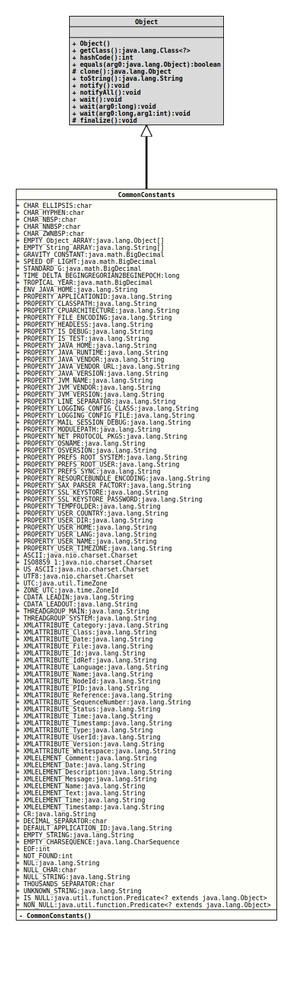

This class provides a bunch of commonly used constants.
The constants are arranged into several categories.
- Physical constants like gravity and speed of light.
- XML constants, like often used names for entities and attributes.
- Miscellaneous constants like the empty string or the null char.
- Author:
- Thomas Thrien (thomas.thrien@tquadrat.org)
- Version:
- $Id: CommonConstants.java 1060 2023-09-24 19:21:40Z tquadrat $
- Since:
- 0.0.5
- UML Diagram
-

UML Diagram for "org.tquadrat.foundation.lang.CommonConstants"
{kind=link}
-
Field Summary
FieldsModifier and TypeFieldDescriptionstatic final CharsetThe reference to the ASCII character set.static final StringThe lead-in for a CDATA wrapped String: "<![CDATA["static final StringThe lead-out for a CDATA wrapped String: "]]>"static final charThe horizontal ellipsis: … (…/…/…/…).static final charThe hyphen character (‐/‐/‐/HYPHEN).
This is different from the character '-' (HYPHEN-MINUS), although it looks similar.static final charThe non-breaking space character ( / ).static final charThe small non-breaking space character ( / ).static final charThe zero-width non-breaking space character; in fact, the 'word joiner' character that should be used instead of the original character.static final StringThe line terminator as defined by the underlying operating system.static final charThe decimal separator for the current locale.static final StringThe default application id if nothing else could be used: "Default Program Main".static final boolean[]Deprecated, for removal: This API element is subject to removal in a future version.static final Boolean[]Deprecated, for removal: This API element is subject to removal in a future version.The empty arrays were created to optimize the use of the methodtoArray(Object[])of the collection types.static final byte[]Deprecated, for removal: This API element is subject to removal in a future version.The empty arrays were created to optimize the use of the methodtoArray(Object[])of the collection types.static final Byte[]Deprecated, for removal: This API element is subject to removal in a future version.The empty arrays were created to optimize the use of the methodtoArray(Object[])of the collection types.static final char[]Deprecated, for removal: This API element is subject to removal in a future version.The empty arrays were created to optimize the use of the methodtoArray(Object[])of the collection types.static final Character[]Deprecated, for removal: This API element is subject to removal in a future version.The empty arrays were created to optimize the use of the methodtoArray(Object[])of the collection types.static final CharSequenceAn empty char sequence.static final CharSequence[]Deprecated, for removal: This API element is subject to removal in a future version.The empty arrays were created to optimize the use of the methodtoArray(Object[])of the collection types.static final Class<?>[]Deprecated, for removal: This API element is subject to removal in a future version.The empty arrays were created to optimize the use of the methodtoArray(Object[])of the collection types.static final Comparable<?>[]Deprecated, for removal: This API element is subject to removal in a future version.The empty arrays were created to optimize the use of the methodtoArray(Object[])of the collection types.static final Date[]Deprecated, for removal: This API element is subject to removal in a future version.The empty arrays were created to optimize the use of the methodtoArray(Object[])of the collection types.static final double[]Deprecated, for removal: This API element is subject to removal in a future version.The empty arrays were created to optimize the use of the methodtoArray(Object[])of the collection types.static final Double[]Deprecated, for removal: This API element is subject to removal in a future version.The empty arrays were created to optimize the use of the methodtoArray(Object[])of the collection types.static final Exception[]Deprecated, for removal: This API element is subject to removal in a future version.The empty arrays were created to optimize the use of the methodtoArray(Object[])of the collection types.static final Field[]Deprecated, for removal: This API element is subject to removal in a future version.The empty arrays were created to optimize the use of the methodtoArray(Object[])of the collection types.static final File[]Deprecated, for removal: This API element is subject to removal in a future version.The empty arrays were created to optimize the use of the methodtoArray(Object[])of the collection types.static final float[]Deprecated, for removal: This API element is subject to removal in a future version.The empty arrays were created to optimize the use of the methodtoArray(Object[])of the collection types.static final Float[]Deprecated, for removal: This API element is subject to removal in a future version.The empty arrays were created to optimize the use of the methodtoArray(Object[])of the collection types.static final InetAddress[]Deprecated, for removal: This API element is subject to removal in a future version.The empty arrays were created to optimize the use of the methodtoArray(Object[])of the collection types.static final Instant[]Deprecated, for removal: This API element is subject to removal in a future version.The empty arrays were created to optimize the use of the methodtoArray(Object[])of the collection types.static final int[]Deprecated, for removal: This API element is subject to removal in a future version.The empty arrays were created to optimize the use of the methodtoArray(Object[])of the collection types.static final Integer[]Deprecated, for removal: This API element is subject to removal in a future version.The empty arrays were created to optimize the use of the methodtoArray(Object[])of the collection types.static final List<?>[]Deprecated, for removal: This API element is subject to removal in a future version.The empty arrays were created to optimize the use of the methodtoArray(Object[])of the collection types.static final Locale[]Deprecated, for removal: This API element is subject to removal in a future version.The empty arrays were created to optimize the use of the methodtoArray(Object[])of the collection types.static final long[]Deprecated, for removal: This API element is subject to removal in a future version.The empty arrays were created to optimize the use of the methodtoArray(Object[])of the collection types.static final Long[]Deprecated, for removal: This API element is subject to removal in a future version.The empty arrays were created to optimize the use of the methodtoArray(Object[])of the collection types.static final Map<?,?>[] Deprecated, for removal: This API element is subject to removal in a future version.The empty arrays were created to optimize the use of the methodtoArray(Object[])of the collection types.static final Map.Entry<?,?>[] Deprecated, for removal: This API element is subject to removal in a future version.The empty arrays were created to optimize the use of the methodtoArray(Object[])of the collection types.static final Method[]Deprecated, for removal: This API element is subject to removal in a future version.The empty arrays were created to optimize the use of the methodtoArray(Object[])of the collection types.static final Number[]Deprecated, for removal: This API element is subject to removal in a future version.The empty arrays were created to optimize the use of the methodtoArray(Object[])of the collection types.static final Object[]An empty array ofObjectobjects.static final Pattern[]Deprecated, for removal: This API element is subject to removal in a future version.The empty arrays were created to optimize the use of the methodtoArray(Object[])of the collection types.static final short[]Deprecated, for removal: This API element is subject to removal in a future version.The empty arrays were created to optimize the use of the methodtoArray(Object[])of the collection types.static final Short[]Deprecated, for removal: This API element is subject to removal in a future version.The empty arrays were created to optimize the use of the methodtoArray(Object[])of the collection types.static final StackTraceElement[]Deprecated, for removal: This API element is subject to removal in a future version.The empty arrays were created to optimize the use of the methodtoArray(Object[])of the collection types.static final StringThe empty string.static final String[]An empty array ofStringinstances.static final Throwable[]Deprecated, for removal: This API element is subject to removal in a future version.The empty arrays were created to optimize the use of the methodtoArray(Object[])of the collection types.static final URI[]Deprecated, for removal: This API element is subject to removal in a future version.The empty arrays were created to optimize the use of the methodtoArray(Object[])of the collection types.static final URL[]Deprecated, for removal: This API element is subject to removal in a future version.The empty arrays were created to optimize the use of the methodtoArray(Object[])of the collection types.static final UUID[]Deprecated, for removal: This API element is subject to removal in a future version.The empty arrays were created to optimize the use of the methodtoArray(Object[])of the collection types.static final StringThe Java installation directory: "JAVA_HOME".static final intThe End-Of-File marker for streams: -1.static final BigDecimalThe Gravity constant: 6.672E-11 (N * m^2)/(kg^2).Returnstrueif the provided reference isnullotherwise returnsfalse.static final CharsetThe reference to the ISO-8859-1 character set.Returnstrueif the provided reference is non-nullotherwise returnsfalse.static final intThe index value indicating that nothing was found: -1.static final StringA String containing onlyNUL(theNULL_CHAR).static final charThe null character.static final StringA String containing the sequence "null".static final StringThe system property for the application id as used by the logging sub-system: "org.tquadrat.logging.applicationId".static final StringThe vested system property for the current class path: "java.class.path".static final StringThe vested system property for the architecture of the current CPU: "os.arch".static final StringDeprecated, for removal: This API element is subject to removal in a future version.Replaced byPROPERTY_MAIL_SESSION_DEBUG.static final StringThe vested system property for the file encoding used by the JVM: "file.encoding".static final StringThe system property providing the flag that indicates whether the program is running in a headless mode, meaning that is does not have any kind of a graphical user interface: "java.awt.headless".static final StringThe system property that is used to enable the debug mode: "isDebug".static final StringThe system property that is used to enable the test mode: "isTest".static final StringThe vested system property for the Java installation directory: "java.home".static final StringThe system property for the name of the Java runtime: "java.runtime.name".static final StringThe vested system property for the Java vendor: "java.vendor".static final StringThe vested system property for the homepage URL of the Java vendor: "java.vendor.url".static final StringThe vested system property for the Java version: "java.version".static final StringThe vested system property for the name of the current JVM: "java.vm.name".static final StringThe vested system property for the name of the vendor for the current JVM: "java.vm.vendor".static final StringThe vested system property for the version of the current JVM: "java.vm.version".static final StringThe vested system property for the line separator: "line.separator".static final StringThe optional system property for the name of the class that provides the configuration the JDK logger: "java.util.logging.config.class".static final StringThe optional system property for the name of the configuration file for the JDK logger: "java.util.logging.config.file".static final StringThe optional system property for enabling java mail session debug: "javax.mail.Session.debug".static final StringThe (vested [?])static final StringThe system property for the name of the packages with URL protocol handlers: "java.protocol.handler.pkgs".static final StringThe vested system property for the name of the current operating system: "os.name".static final StringThe vested system property for the version of the current operating system: "os.version".static final StringThe system property for the location of the system preferences files on a UNIX/Linux system: "java.util.prefs.systemRoot".
If not set, the location is/etc/, resulting to/etc/.java/.systemPrefs.
If the default location is used, the respective folder has to be created by a user withrootpermissions; the files in there should have the rights 544, while the folder and its sub-folders should have 755.static final StringThe system property for the location of the user preferences files on a UNIX/Linux system: "java.util.prefs.userRoot".
If not set, the location is~/, resulting to~/.java/.userPrefs/.static final StringThe system property for the synchronisation interval of the preferences on a UNIX/Linux system, in seconds: "java.util.prefs.syncInterval".
If not set, the interval is 30 seconds.static final StringThe system property that is used to force the encoding for aPropertyResourceBundle: "java.util.PropertyResourceBundle.encoding".static final StringThe system property for the class name of the SAX XML parser factory: "javax.xml.parsers.SAXParserFactory".static final StringThe system property for the name of the file with the SSL key store: "javax.net.ssl.keyStore".static final StringThe system property for the password for the SSL key store: "javax.net.ssl.keyStorePassword".static final StringThe vested system property for the name of thetempfolder that is used by the current user: "java.io.tmpdir".static final StringThe system property for the country code setting for the current user: "user.country".static final StringThe vested system property for the name of the current working directory of the current user: "user.dir".static final StringThe vested system property for the name of the home directory of the current user: "user.home".static final StringThe system property for the language code setting the current user: "user.language".static final StringThe vested system property for the name of the current user: "user.name".static final StringThe system property for the time zone setting the current user: "user.timezone".static final BigDecimalThe speed of light in km per second = 299792.458 km/s.static final BigDecimalThe value for 1 G: 9.80665 m/(s^2)static final charThe grouping separator for the current locale, used with large numbers to separate thousands.static final StringThe name of the main thread group: "main".
This is the group of the main thread.static final StringThe name of the system thread group: "system".
This is the group of several system threads and the parent thread group for the main thread group.static final longThe time between 1582-10-15T00:00 (the start of the Gregorian calendar) and 1970-01-01T00:00 (the beginning of the "Epoch") in seconds: 12219292800L.static final BigDecimalThe length of a (tropical) year in days, according to SI: 365.242190517 d.static final StringA String containing the sequence "<UNKNOWN>".static final CharsetThe reference to the US-ASCII character set; this is the same as the ASCII character set.static final TimeZoneThe basic time zone (the time zone for the 'Universal Time Code').static final CharsetThe reference to the UTF-8 character set.static final StringThe attribute name for an XML attribute holding a category of something: "category".static final StringThe attribute name for an XML attribute holding a class name: "class".static final StringThe attribute name for an XML attribute holding a date, usually without the time information: "date".static final StringThe attribute name for an XML attribute holding a file name: "file".static final StringThe attribute name for the XML id attribute: "xml:id".static final StringThe attribute name for the XML idref attribute: "idref".static final StringThe attribute name for the XML language attribute: "xml:lang".static final StringThe attribute name for the XML name attribute: "name".
Only names that follow exact rules for their character set can be stored in XML attributes, but free names have to be stored as XML elements.static final StringThe name for the node id XML attribute: "node".static final StringThe name for the PID XML attribute: "pid".static final StringThe name for the reference XML attribute: "reference".static final StringThe name for the sequence number XML attribute: "sequenceNumber".static final StringThe name for the status XML attribute: "status".static final StringThe attribute name for an XML attribute holding a time, usually without the date information: "time".static final StringThe name for an XML attribute holding a date/time: "timestamp".static final StringThe name for an XML attribute holding a type, in the sense of a category or model, and usually not in the sense this term is used in the context of programming languages: "type".static final StringThe name for the user id XML attribute: "userId".static final StringThe name for the version XML attribute: "version".static final StringThe attribute name for the XML space attribute: "xml:space".static final StringThe element name for an XML element representing a comment: "comment".
This is not an XML comment (they will be written as<!static final StringThe element name for an XML element holding a date, usually without the time information: "date".static final StringThe element name for an XML element representing a description of some kind: "description".static final StringThe element name for an XML element containing a message: "message".static final StringThe element name for an XML element representing a name of some kind: "name".
Only names that follow exact rules for their character set can be stored in XML attributes, but free names have to be stored as XML elements.static final StringThe element name for an XML element holding text: "text".static final StringThe element name for an XML element holding a time, usually without the date information: "time".static final StringThe name for an XML element holding a date/time: "timestamp".static final ZoneIdThe basic time zone (the time zone for the 'Universal Time Code'). -
Constructor Summary
Constructors -
Method Summary
-
Field Details
-
CHAR_ELLIPSIS
The horizontal ellipsis: … (…/…/…/…).- See Also:
-
CHAR_HYPHEN
The hyphen character (‐/‐/‐/HYPHEN).
This is different from the character '-' (HYPHEN-MINUS), although it looks similar. This character can be used as a replacement for the HYPHEN-MINUS in contexts where HYPHEN-MINUS has a special meaning.- See Also:
-
CHAR_NBSP
The non-breaking space character ( / ).- See Also:
-
CHAR_NNBSP
The small non-breaking space character ( / ).- See Also:
-
CHAR_ZWNBSP
The zero-width non-breaking space character; in fact, the 'word joiner' character that should be used instead of the original character.- See Also:
-
EMPTY_boolean_ARRAY
@Deprecated(since="0.1.0", forRemoval=true) @API(status=DEPRECATED, since="0.0.5") public static final boolean[] EMPTY_boolean_ARRAYDeprecated, for removal: This API element is subject to removal in a future version.The empty arrays were created to optimize the use of the methodtoArray(Object[])of the collection types. This got obsolete when Java 11 introduced the methodtoArray(IntFunction); theIntFunctioncould be the call tonew [].An empty array ofbooleans. -
EMPTY_Boolean_ARRAY
@Deprecated(since="0.1.0", forRemoval=true) @API(status=DEPRECATED, since="0.0.5") public static final Boolean[] EMPTY_Boolean_ARRAYDeprecated, for removal: This API element is subject to removal in a future version.The empty arrays were created to optimize the use of the methodtoArray(Object[])of the collection types. This got obsolete when Java 11 introduced the methodtoArray(IntFunction); theIntFunctioncould be the call tonew [].An empty array ofBooleanobjects. -
EMPTY_byte_ARRAY
@Deprecated(since="0.1.0", forRemoval=true) @API(status=DEPRECATED, since="0.0.5") public static final byte[] EMPTY_byte_ARRAYDeprecated, for removal: This API element is subject to removal in a future version.The empty arrays were created to optimize the use of the methodtoArray(Object[])of the collection types. This got obsolete when Java 11 introduced the methodtoArray(IntFunction); theIntFunctioncould be the call tonew [].An empty array ofbytes. -
EMPTY_Byte_ARRAY
@Deprecated(since="0.1.0", forRemoval=true) @API(status=DEPRECATED, since="0.0.5") public static final Byte[] EMPTY_Byte_ARRAYDeprecated, for removal: This API element is subject to removal in a future version.The empty arrays were created to optimize the use of the methodtoArray(Object[])of the collection types. This got obsolete when Java 11 introduced the methodtoArray(IntFunction); theIntFunctioncould be the call tonew [].An empty array ofByteobjects. -
EMPTY_char_ARRAY
@Deprecated(since="0.1.0", forRemoval=true) @API(status=DEPRECATED, since="0.0.5") public static final char[] EMPTY_char_ARRAYDeprecated, for removal: This API element is subject to removal in a future version.The empty arrays were created to optimize the use of the methodtoArray(Object[])of the collection types. This got obsolete when Java 11 introduced the methodtoArray(IntFunction); theIntFunctioncould be the call tonew [].An empty array ofchars. -
EMPTY_Character_ARRAY
@Deprecated(since="0.1.0", forRemoval=true) @API(status=DEPRECATED, since="0.0.5") public static final Character[] EMPTY_Character_ARRAYDeprecated, for removal: This API element is subject to removal in a future version.The empty arrays were created to optimize the use of the methodtoArray(Object[])of the collection types. This got obsolete when Java 11 introduced the methodtoArray(IntFunction); theIntFunctioncould be the call tonew [].An empty array ofCharacterobjects. -
EMPTY_CharSequence_ARRAY
@Deprecated(since="0.1.0", forRemoval=true) @API(status=DEPRECATED, since="0.0.5") public static final CharSequence[] EMPTY_CharSequence_ARRAYDeprecated, for removal: This API element is subject to removal in a future version.The empty arrays were created to optimize the use of the methodtoArray(Object[])of the collection types. This got obsolete when Java 11 introduced the methodtoArray(IntFunction); theIntFunctioncould be the call tonew [].An empty array ofCharSequenceobjects. -
EMPTY_Class_ARRAY
@Deprecated(since="0.1.0", forRemoval=true) @API(status=DEPRECATED, since="0.0.5") public static final Class<?>[] EMPTY_Class_ARRAYDeprecated, for removal: This API element is subject to removal in a future version.The empty arrays were created to optimize the use of the methodtoArray(Object[])of the collection types. This got obsolete when Java 11 introduced the methodtoArray(IntFunction); theIntFunctioncould be the call tonew [].An empty array ofClassobjects. -
EMPTY_Comparable_ARRAY
@Deprecated(since="0.1.0", forRemoval=true) @API(status=DEPRECATED, since="0.0.5") public static final Comparable<?>[] EMPTY_Comparable_ARRAYDeprecated, for removal: This API element is subject to removal in a future version.The empty arrays were created to optimize the use of the methodtoArray(Object[])of the collection types. This got obsolete when Java 11 introduced the methodtoArray(IntFunction); theIntFunctioncould be the call tonew [].An empty array ofComparableobjects. -
EMPTY_Date_ARRAY
@Deprecated(since="0.1.0", forRemoval=true) @API(status=STABLE, since="0.0.5") public static final Date[] EMPTY_Date_ARRAYDeprecated, for removal: This API element is subject to removal in a future version.The empty arrays were created to optimize the use of the methodtoArray(Object[])of the collection types. This got obsolete when Java 11 introduced the methodtoArray(IntFunction); theIntFunctioncould be the call tonew [].An empty array ofDateobjects. -
EMPTY_double_ARRAY
@Deprecated(since="0.1.0", forRemoval=true) @API(status=DEPRECATED, since="0.0.5") public static final double[] EMPTY_double_ARRAYDeprecated, for removal: This API element is subject to removal in a future version.The empty arrays were created to optimize the use of the methodtoArray(Object[])of the collection types. This got obsolete when Java 11 introduced the methodtoArray(IntFunction); theIntFunctioncould be the call tonew [].An empty array ofdoubles. -
EMPTY_Double_ARRAY
@Deprecated(since="0.1.0", forRemoval=true) @API(status=DEPRECATED, since="0.0.5") public static final Double[] EMPTY_Double_ARRAYDeprecated, for removal: This API element is subject to removal in a future version.The empty arrays were created to optimize the use of the methodtoArray(Object[])of the collection types. This got obsolete when Java 11 introduced the methodtoArray(IntFunction); theIntFunctioncould be the call tonew [].An empty array ofDoubleobjects. -
EMPTY_Exception_ARRAY
@Deprecated(since="0.1.0", forRemoval=true) @API(status=DEPRECATED, since="0.0.5") public static final Exception[] EMPTY_Exception_ARRAYDeprecated, for removal: This API element is subject to removal in a future version.The empty arrays were created to optimize the use of the methodtoArray(Object[])of the collection types. This got obsolete when Java 11 introduced the methodtoArray(IntFunction); theIntFunctioncould be the call tonew [].An empty array ofExceptionobjects. -
EMPTY_Field_ARRAY
@Deprecated(since="0.1.0", forRemoval=true) @API(status=DEPRECATED, since="0.0.5") public static final Field[] EMPTY_Field_ARRAYDeprecated, for removal: This API element is subject to removal in a future version.The empty arrays were created to optimize the use of the methodtoArray(Object[])of the collection types. This got obsolete when Java 11 introduced the methodtoArray(IntFunction); theIntFunctioncould be the call tonew [].An empty array ofFieldobjects. -
EMPTY_File_ARRAY
@Deprecated(since="0.1.0", forRemoval=true) @API(status=DEPRECATED, since="0.0.5") public static final File[] EMPTY_File_ARRAYDeprecated, for removal: This API element is subject to removal in a future version.The empty arrays were created to optimize the use of the methodtoArray(Object[])of the collection types. This got obsolete when Java 11 introduced the methodtoArray(IntFunction); theIntFunctioncould be the call tonew [].An empty array ofFileobjects. -
EMPTY_float_ARRAY
@Deprecated(since="0.1.0", forRemoval=true) @API(status=DEPRECATED, since="0.0.5") public static final float[] EMPTY_float_ARRAYDeprecated, for removal: This API element is subject to removal in a future version.The empty arrays were created to optimize the use of the methodtoArray(Object[])of the collection types. This got obsolete when Java 11 introduced the methodtoArray(IntFunction); theIntFunctioncould be the call tonew [].An empty array offloats. -
EMPTY_Float_ARRAY
@Deprecated(since="0.1.0", forRemoval=true) @API(status=DEPRECATED, since="0.0.5") public static final Float[] EMPTY_Float_ARRAYDeprecated, for removal: This API element is subject to removal in a future version.The empty arrays were created to optimize the use of the methodtoArray(Object[])of the collection types. This got obsolete when Java 11 introduced the methodtoArray(IntFunction); theIntFunctioncould be the call tonew [].An empty array ofFloatobjects. -
EMPTY_InetAddress_ARRAY
@Deprecated(since="0.1.0", forRemoval=true) @API(status=DEPRECATED, since="0.0.5") public static final InetAddress[] EMPTY_InetAddress_ARRAYDeprecated, for removal: This API element is subject to removal in a future version.The empty arrays were created to optimize the use of the methodtoArray(Object[])of the collection types. This got obsolete when Java 11 introduced the methodtoArray(IntFunction); theIntFunctioncould be the call tonew [].An empty array of InetAddress objects. -
EMPTY_Instant_ARRAY
@Deprecated(since="0.1.0", forRemoval=true) @API(status=DEPRECATED, since="0.0.5") public static final Instant[] EMPTY_Instant_ARRAYDeprecated, for removal: This API element is subject to removal in a future version.The empty arrays were created to optimize the use of the methodtoArray(Object[])of the collection types. This got obsolete when Java 11 introduced the methodtoArray(IntFunction); theIntFunctioncould be the call tonew [].An empty array ofInstantobjects. -
EMPTY_int_ARRAY
@Deprecated(since="0.1.0", forRemoval=true) @API(status=DEPRECATED, since="0.0.5") public static final int[] EMPTY_int_ARRAYDeprecated, for removal: This API element is subject to removal in a future version.The empty arrays were created to optimize the use of the methodtoArray(Object[])of the collection types. This got obsolete when Java 11 introduced the methodtoArray(IntFunction); theIntFunctioncould be the call tonew [].An empty array ofintvalues. -
EMPTY_Integer_ARRAY
@Deprecated(since="0.1.0", forRemoval=true) @API(status=DEPRECATED, since="0.0.5") public static final Integer[] EMPTY_Integer_ARRAYDeprecated, for removal: This API element is subject to removal in a future version.The empty arrays were created to optimize the use of the methodtoArray(Object[])of the collection types. This got obsolete when Java 11 introduced the methodtoArray(IntFunction); theIntFunctioncould be the call tonew [].An empty array ofIntegerobjects. -
EMPTY_List_ARRAY
@Deprecated(since="0.1.0", forRemoval=true) @API(status=DEPRECATED, since="0.0.5") public static final List<?>[] EMPTY_List_ARRAYDeprecated, for removal: This API element is subject to removal in a future version.The empty arrays were created to optimize the use of the methodtoArray(Object[])of the collection types. This got obsolete when Java 11 introduced the methodtoArray(IntFunction); theIntFunctioncould be the call tonew [].An empty array ofListobjects. -
EMPTY_Locale_ARRAY
@Deprecated(since="0.1.0", forRemoval=true) @API(status=DEPRECATED, since="0.0.5") public static final Locale[] EMPTY_Locale_ARRAYDeprecated, for removal: This API element is subject to removal in a future version.The empty arrays were created to optimize the use of the methodtoArray(Object[])of the collection types. This got obsolete when Java 11 introduced the methodtoArray(IntFunction); theIntFunctioncould be the call tonew [].An empty array ofLocaleobjects. -
EMPTY_long_ARRAY
@Deprecated(since="0.1.0", forRemoval=true) @API(status=DEPRECATED, since="0.0.5") public static final long[] EMPTY_long_ARRAYDeprecated, for removal: This API element is subject to removal in a future version.The empty arrays were created to optimize the use of the methodtoArray(Object[])of the collection types. This got obsolete when Java 11 introduced the methodtoArray(IntFunction); theIntFunctioncould be the call tonew [].An empty array oflongelements. -
EMPTY_Long_ARRAY
@Deprecated(since="0.1.0", forRemoval=true) @API(status=DEPRECATED, since="0.0.5") public static final Long[] EMPTY_Long_ARRAYDeprecated, for removal: This API element is subject to removal in a future version.The empty arrays were created to optimize the use of the methodtoArray(Object[])of the collection types. This got obsolete when Java 11 introduced the methodtoArray(IntFunction); theIntFunctioncould be the call tonew [].An empty array ofLongobjects. -
EMPTY_Map_ARRAY
@Deprecated(since="0.1.0", forRemoval=true) @API(status=DEPRECATED, since="0.0.5") public static final Map<?,?>[] EMPTY_Map_ARRAYDeprecated, for removal: This API element is subject to removal in a future version.The empty arrays were created to optimize the use of the methodtoArray(Object[])of the collection types. This got obsolete when Java 11 introduced the methodtoArray(IntFunction); theIntFunctioncould be the call tonew [].An empty array ofMapobjects. -
EMPTY_MapEntry_ARRAY
@Deprecated(since="0.1.0", forRemoval=true) @API(status=DEPRECATED, since="0.0.5") public static final Map.Entry<?,?>[] EMPTY_MapEntry_ARRAYDeprecated, for removal: This API element is subject to removal in a future version.The empty arrays were created to optimize the use of the methodtoArray(Object[])of the collection types. This got obsolete when Java 11 introduced the methodtoArray(IntFunction); theIntFunctioncould be the call tonew [].An empty array ofMap.Entryobjects. -
EMPTY_Method_ARRAY
@Deprecated(since="0.1.0", forRemoval=true) @API(status=DEPRECATED, since="0.0.5") public static final Method[] EMPTY_Method_ARRAYDeprecated, for removal: This API element is subject to removal in a future version.The empty arrays were created to optimize the use of the methodtoArray(Object[])of the collection types. This got obsolete when Java 11 introduced the methodtoArray(IntFunction); theIntFunctioncould be the call tonew [].An empty array ofMethodobjects. -
EMPTY_Number_ARRAY
@Deprecated(since="0.1.0", forRemoval=true) @API(status=DEPRECATED, since="0.0.5") public static final Number[] EMPTY_Number_ARRAYDeprecated, for removal: This API element is subject to removal in a future version.The empty arrays were created to optimize the use of the methodtoArray(Object[])of the collection types. This got obsolete when Java 11 introduced the methodtoArray(IntFunction); theIntFunctioncould be the call tonew [].An empty array ofNumberobjects. -
EMPTY_Object_ARRAY
An empty array ofObjectobjects. -
EMPTY_Pattern_ARRAY
@Deprecated(since="0.1.0", forRemoval=true) @API(status=DEPRECATED, since="0.0.5") public static final Pattern[] EMPTY_Pattern_ARRAYDeprecated, for removal: This API element is subject to removal in a future version.The empty arrays were created to optimize the use of the methodtoArray(Object[])of the collection types. This got obsolete when Java 11 introduced the methodtoArray(IntFunction); theIntFunctioncould be the call tonew [].An empty array ofPatternobjects. -
EMPTY_short_ARRAY
@Deprecated(since="0.1.0", forRemoval=true) @API(status=DEPRECATED, since="0.0.5") public static final short[] EMPTY_short_ARRAYDeprecated, for removal: This API element is subject to removal in a future version.The empty arrays were created to optimize the use of the methodtoArray(Object[])of the collection types. This got obsolete when Java 11 introduced the methodtoArray(IntFunction); theIntFunctioncould be the call tonew [].An empty array ofshort. -
EMPTY_Short_ARRAY
@Deprecated(since="0.1.0", forRemoval=true) @API(status=DEPRECATED, since="0.0.5") public static final Short[] EMPTY_Short_ARRAYDeprecated, for removal: This API element is subject to removal in a future version.The empty arrays were created to optimize the use of the methodtoArray(Object[])of the collection types. This got obsolete when Java 11 introduced the methodtoArray(IntFunction); theIntFunctioncould be the call tonew [].An empty array ofShortobjects. -
EMPTY_StackTraceElement_ARRAY
@Deprecated(since="0.1.0", forRemoval=true) @API(status=DEPRECATED, since="0.0.5") public static final StackTraceElement[] EMPTY_StackTraceElement_ARRAYDeprecated, for removal: This API element is subject to removal in a future version.The empty arrays were created to optimize the use of the methodtoArray(Object[])of the collection types. This got obsolete when Java 11 introduced the methodtoArray(IntFunction); theIntFunctioncould be the call tonew [].An empty array ofStackTraceElementobjects. -
EMPTY_String_ARRAY
An empty array ofStringinstances. -
EMPTY_Throwable_ARRAY
@Deprecated(since="0.1.0", forRemoval=true) @API(status=DEPRECATED, since="0.0.5") public static final Throwable[] EMPTY_Throwable_ARRAYDeprecated, for removal: This API element is subject to removal in a future version.The empty arrays were created to optimize the use of the methodtoArray(Object[])of the collection types. This got obsolete when Java 11 introduced the methodtoArray(IntFunction); theIntFunctioncould be the call tonew [].An empty array ofThrowableobjects. -
EMPTY_URI_ARRAY
@Deprecated(since="0.1.0", forRemoval=true) @API(status=DEPRECATED, since="0.0.5") public static final URI[] EMPTY_URI_ARRAYDeprecated, for removal: This API element is subject to removal in a future version.The empty arrays were created to optimize the use of the methodtoArray(Object[])of the collection types. This got obsolete when Java 11 introduced the methodtoArray(IntFunction); theIntFunctioncould be the call tonew [].An empty array ofURIobjects. -
EMPTY_URL_ARRAY
@Deprecated(since="0.1.0", forRemoval=true) @API(status=DEPRECATED, since="0.0.5") public static final URL[] EMPTY_URL_ARRAYDeprecated, for removal: This API element is subject to removal in a future version.The empty arrays were created to optimize the use of the methodtoArray(Object[])of the collection types. This got obsolete when Java 11 introduced the methodtoArray(IntFunction); theIntFunctioncould be the call tonew [].An empty array ofURLobjects. -
EMPTY_UUID_ARRAY
@Deprecated(since="0.1.0", forRemoval=true) @API(status=DEPRECATED, since="0.0.5") public static final UUID[] EMPTY_UUID_ARRAYDeprecated, for removal: This API element is subject to removal in a future version.The empty arrays were created to optimize the use of the methodtoArray(Object[])of the collection types. This got obsolete when Java 11 introduced the methodtoArray(IntFunction); theIntFunctioncould be the call tonew [].An empty array ofUUIDobjects. -
GRAVITY_CONSTANT
The Gravity constant: 6.672E-11 (N * m^2)/(kg^2). An alternative unit for the constant is (m^3)/(kg * s^2). -
SPEED_OF_LIGHT
The speed of light in km per second = 299792.458 km/s. -
STANDARD_G
The value for 1 G: 9.80665 m/(s^2) -
TIME_DELTA_BEGINGREGORIAN2BEGINEPOCH
The time between 1582-10-15T00:00 (the start of the Gregorian calendar) and 1970-01-01T00:00 (the beginning of the "Epoch") in seconds: 12219292800L.
This constant is used for example to determine the number of nanoseconds since the beginning of the Gregorian calendar, and that is used to create UUIDs based on time and location.
- See Also:
-
TROPICAL_YEAR
The length of a (tropical) year in days, according to SI: 365.242190517 d. -
ENV_JAVA_HOME
The Java installation directory: "JAVA_HOME".- See Also:
-
PROPERTY_APPLICATIONID
The system property for the application id as used by the logging sub-system: "org.tquadrat.logging.applicationId".
For details on this refer to the project
logging.- See Also:
-
PROPERTY_CLASSPATH
The vested system property for the current class path: "java.class.path".- See Also:
-
PROPERTY_CPUARCHITECTURE
The vested system property for the architecture of the current CPU: "os.arch".- See Also:
-
PROPERTY_ENABLE_JAVA_MAIL_SESSION_DEBUG
@Deprecated(since="0.1.0", forRemoval=true) @API(status=DEPRECATED, since="0.0.5") public static final String PROPERTY_ENABLE_JAVA_MAIL_SESSION_DEBUGDeprecated, for removal: This API element is subject to removal in a future version.Replaced byPROPERTY_MAIL_SESSION_DEBUG.The optional system property for enabling java mail session debug: "javax.mail.Session.debug".
This flag will not be recognised automatically. Refer to the documentation ofjavax.mail.Session.- See Also:
-
PROPERTY_FILE_ENCODING
The vested system property for the file encoding used by the JVM: "file.encoding".- See Also:
-
PROPERTY_HEADLESS
The system property providing the flag that indicates whether the program is running in a headless mode, meaning that is does not have any kind of a graphical user interface: "java.awt.headless".
Instead of checking the property directly, a call to
java.awt.GraphicsEnvironment#isHeadless()will return the same result, but it would require to add the modulejava.desktopto the dependencies of the current module.JavaFX does not have a headless mode as such (although there are several solutions for headless testing of JavaFX applications), but this flag can still be used to decide whether a JavaFX can run or not: basically, AWT, Swing and JavaFX need the same resources, a keyboard, a mouse and a graphical display.
- See Also:
-
PROPERTY_IS_DEBUG
The system property that is used to enable the debug mode: "isDebug".- See Also:
-
PROPERTY_IS_TEST
The system property that is used to enable the test mode: "isTest".- See Also:
-
PROPERTY_JAVA_HOME
The vested system property for the Java installation directory: "java.home".- See Also:
-
PROPERTY_JAVA_RUNTIME
The system property for the name of the Java runtime: "java.runtime.name".- See Also:
-
PROPERTY_JAVA_VENDOR
The vested system property for the Java vendor: "java.vendor".- See Also:
-
PROPERTY_JAVA_VENDOR_URL
The vested system property for the homepage URL of the Java vendor: "java.vendor.url".- See Also:
-
PROPERTY_JAVA_VERSION
The vested system property for the Java version: "java.version".- See Also:
-
PROPERTY_JVM_NAME
The vested system property for the name of the current JVM: "java.vm.name".- See Also:
-
PROPERTY_JVM_VENDOR
The vested system property for the name of the vendor for the current JVM: "java.vm.vendor".- See Also:
-
PROPERTY_JVM_VERSION
The vested system property for the version of the current JVM: "java.vm.version".- See Also:
-
PROPERTY_LINE_SEPARATOR
The vested system property for the line separator: "line.separator".- See Also:
-
PROPERTY_LOGGING_CONFIG_CLASS
The optional system property for the name of the class that provides the configuration the JDK logger: "java.util.logging.config.class".- See Also:
-
PROPERTY_LOGGING_CONFIG_FILE
The optional system property for the name of the configuration file for the JDK logger: "java.util.logging.config.file".- See Also:
-
PROPERTY_MAIL_SESSION_DEBUG
The optional system property for enabling java mail session debug: "javax.mail.Session.debug".
This flag will not be recognised automatically. Refer to the documentation of
javax.mail.Session.- See Also:
-
PROPERTY_MODULEPATH
The (vested [?]) system property for the current module path: "jdk.module.path".- See Also:
-
PROPERTY_NET_PROTOCOL_PKGS
The system property for the name of the packages with URL protocol handlers: "java.protocol.handler.pkgs".- See Also:
-
PROPERTY_OSNAME
The vested system property for the name of the current operating system: "os.name".- See Also:
-
PROPERTY_OSVERSION
The vested system property for the version of the current operating system: "os.version".- See Also:
-
PROPERTY_PREFS_ROOT_SYSTEM
The system property for the location of the system preferences files on a UNIX/Linux system: "java.util.prefs.systemRoot".
If not set, the location is/etc/, resulting to/etc/.java/.systemPrefs.
If the default location is used, the respective folder has to be created by a user withrootpermissions; the files in there should have the rights 544, while the folder and its sub-folders should have 755.- See Also:
-
PROPERTY_PREFS_ROOT_USER
The system property for the location of the user preferences files on a UNIX/Linux system: "java.util.prefs.userRoot".
If not set, the location is~/, resulting to~/.java/.userPrefs/.- See Also:
-
PROPERTY_PREFS_SYNC
The system property for the synchronisation interval of the preferences on a UNIX/Linux system, in seconds: "java.util.prefs.syncInterval".
If not set, the interval is 30 seconds. The minimum value is one second.- See Also:
-
PROPERTY_RESOURCEBUNDLE_ENCODING
The system property that is used to force the encoding for a
PropertyResourceBundle: "java.util.PropertyResourceBundle.encoding". Valid values are "UTF-8" and "ISO-8859-1".- See Also:
-
PROPERTY_SAX_PARSER_FACTORY
The system property for the class name of the SAX XML parser factory: "javax.xml.parsers.SAXParserFactory".- See Also:
-
PROPERTY_SSL_KEYSTORE
The system property for the name of the file with the SSL key store: "javax.net.ssl.keyStore".- See Also:
-
PROPERTY_SSL_KEYSTORE_PASSWORD
The system property for the password for the SSL key store: "javax.net.ssl.keyStorePassword".- See Also:
-
PROPERTY_TEMPFOLDER
The vested system property for the name of thetempfolder that is used by the current user: "java.io.tmpdir".- See Also:
-
PROPERTY_USER_COUNTRY
The system property for the country code setting for the current user: "user.country".- See Also:
-
PROPERTY_USER_DIR
The vested system property for the name of the current working directory of the current user: "user.dir".- See Also:
-
PROPERTY_USER_HOME
The vested system property for the name of the home directory of the current user: "user.home".- See Also:
-
PROPERTY_USER_LANG
The system property for the language code setting the current user: "user.language".- See Also:
-
PROPERTY_USER_NAME
The vested system property for the name of the current user: "user.name".- See Also:
-
PROPERTY_USER_TIMEZONE
The system property for the time zone setting the current user: "user.timezone".- See Also:
-
ASCII
The reference to the ASCII character set.- See Also:
-
ISO8859_1
The reference to the ISO-8859-1 character set.- See Also:
-
US_ASCII
The reference to the US-ASCII character set; this is the same as the ASCII character set.- See Also:
-
UTF8
The reference to the UTF-8 character set.- See Also:
-
UTC
The basic time zone (the time zone for the 'Universal Time Code'). -
ZONE_UTC
The basic time zone (the time zone for the 'Universal Time Code'). -
CDATA_LEADIN
The lead-in for a CDATA wrapped String: "<![CDATA["- See Also:
-
CDATA_LEADOUT
The lead-out for a CDATA wrapped String: "]]>"- See Also:
-
THREADGROUP_MAIN
The name of the main thread group: "main".
This is the group of the main thread.- See Also:
-
THREADGROUP_SYSTEM
The name of the system thread group: "system".
This is the group of several system threads and the parent thread group for the main thread group.- See Also:
-
XMLATTRIBUTE_Category
The attribute name for an XML attribute holding a category of something: "category".- See Also:
-
XMLATTRIBUTE_Class
The attribute name for an XML attribute holding a class name: "class".- See Also:
-
XMLATTRIBUTE_Date
The attribute name for an XML attribute holding a date, usually without the time information: "date".- See Also:
-
XMLATTRIBUTE_File
The attribute name for an XML attribute holding a file name: "file".- See Also:
-
XMLATTRIBUTE_Id
The attribute name for the XML id attribute: "xml:id".- See Also:
-
XMLATTRIBUTE_IdRef
The attribute name for the XML idref attribute: "idref".- See Also:
-
XMLATTRIBUTE_Language
The attribute name for the XML language attribute: "xml:lang".
This reserved attribute takes an ISO639 language identifier as value. It indicates the language of the body of the element.
- See Also:
-
XMLATTRIBUTE_Name
The attribute name for the XML name attribute: "name".
Only names that follow exact rules for their character set can be stored in XML attributes, but free names have to be stored as XML elements.- See Also:
-
XMLATTRIBUTE_NodeId
The name for the node id XML attribute: "node".- See Also:
-
XMLATTRIBUTE_PID
The name for the PID XML attribute: "pid".- See Also:
-
XMLATTRIBUTE_Reference
The name for the reference XML attribute: "reference".- See Also:
-
XMLATTRIBUTE_SequenceNumber
The name for the sequence number XML attribute: "sequenceNumber".- See Also:
-
XMLATTRIBUTE_Status
The name for the status XML attribute: "status".- See Also:
-
XMLATTRIBUTE_Time
The attribute name for an XML attribute holding a time, usually without the date information: "time".- See Also:
-
XMLATTRIBUTE_Timestamp
The name for an XML attribute holding a date/time: "timestamp".- See Also:
-
XMLATTRIBUTE_Type
The name for an XML attribute holding a type, in the sense of a category or model, and usually not in the sense this term is used in the context of programming languages: "type".- See Also:
-
XMLATTRIBUTE_UserId
The name for the user id XML attribute: "userId".- See Also:
-
XMLATTRIBUTE_Version
The name for the version XML attribute: "version".- See Also:
-
XMLATTRIBUTE_Whitespace
The attribute name for the XML space attribute: "xml:space".
This reserved attribute indicates whether any whitespace inside the element is significant and should not be altered by the XML processor. The attribute can take one of two enumerated values:
preserve- The XML application preserves all whitespace (newlines, spaces, and tabs) present within the element.
default- The XML processor uses its default processing rules when deciding to preserve or discard the whitespace inside the element.
- See Also:
-
XMLELEMENT_Comment
The element name for an XML element representing a comment: "comment".
This is not an XML comment (they will be written as<!-- … -->in the XML stream) but data that is semantically a comment (like adescription, see below).- See Also:
-
XMLELEMENT_Date
The element name for an XML element holding a date, usually without the time information: "date".- See Also:
-
XMLELEMENT_Description
The element name for an XML element representing a description of some kind: "description".- See Also:
-
XMLELEMENT_Message
The element name for an XML element containing a message: "message".- See Also:
-
XMLELEMENT_Name
The element name for an XML element representing a name of some kind: "name".
Only names that follow exact rules for their character set can be stored in XML attributes, but free names have to be stored as XML elements.- See Also:
-
XMLELEMENT_Text
The element name for an XML element holding text: "text".- See Also:
-
XMLELEMENT_Time
The element name for an XML element holding a time, usually without the date information: "time".- See Also:
-
XMLELEMENT_Timestamp
The name for an XML element holding a date/time: "timestamp".- See Also:
-
CR
The line terminator as defined by the underlying operating system. -
DECIMAL_SEPARATOR
The decimal separator for the current locale. -
DEFAULT_APPLICATION_ID
The default application id if nothing else could be used: "Default Program Main".- See Also:
-
EMPTY_STRING
The empty string. -
EMPTY_CHARSEQUENCE
An empty char sequence. -
EOF
The End-Of-File marker for streams: -1.- See Also:
-
NOT_FOUND
The index value indicating that nothing was found: -1. See for exampleString.indexOf(int).- See Also:
-
NUL
A String containing onlyNUL(theNULL_CHAR). -
NULL_CHAR
The null character. -
NULL_STRING
A String containing the sequence "null". -
THOUSANDS_SEPARATOR
The grouping separator for the current locale, used with large numbers to separate thousands. -
UNKNOWN_STRING
A String containing the sequence "<UNKNOWN>".- See Also:
-
IS_NULL
Returnstrueif the provided reference isnullotherwise returnsfalse.- See Also:
-
NON_NULL
Returnstrueif the provided reference is non-nullotherwise returnsfalse.- See Also:
-
-
Constructor Details
-
CommonConstants
private CommonConstants()No instance of this class is allowed.
-
toArray(Object[])of the collection types.